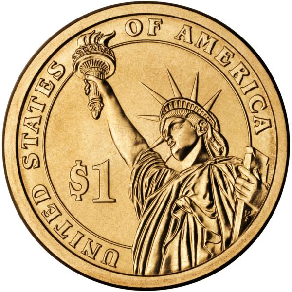

$1$1$1$1$1$1$1$1$1$1
100. Hard Back Case Cover for iPhone
Where to get it: eBay
99. Hershey's King-Sized Chocolate Bar With Almonds
Where to get it: Most pharmacies, convenience stores, and grocery stores
98. $1.00 Coffee
Where to get it: McDonald's
97. Your Favorite Fragrance Samples
Where to get it: eBay
96. ChapStick
Where to get it: Most pharmacies, convenience stores, and grocery stores
95. M and M's
Where to get it: Most pharmacies, convenience stores, and grocery stores
94. A Honey Bun
Where to get it: Most vending machines
93. Men's Musical Christmas Ties
Where to get it: The Dollar Tree
92. Nature's Measure Weight Loss Formula, 30 Count
Where to get it: The Dollar Tree
91. Fun Knick Knacks and School Supplies
Where to get it: Target
90. Fashion Sunglasses
Where to get it: The Dollar Tree
89. Pack of Gum
Where to get it: Most pharmacies, convenience stores, and grocery stores
88. 14 oz. Christmas Stoneware Mugs
Where to get it: The Dollar Tree
87. Solar Cockroach Educational Toy
Where to get it: eBay
86. Individual Servings of Drink Powders like Snapple
Where to get it: Most pharmacies, convenience stores, and grocery stores
85. Whoopee Cushions
Where to get it: Party outlets, magic shops, or joke stores
84. A Frosty
Where to get it: Wendy's
83. Lush Baked Eyeshadow Pots in Modern Colors
Where to get it: Sally's Beauty Supply
84. Men and Woman's Soft Plaid Scarves
Where to get it: The Dollar Tree
81. 10 Inch Tinsel Tree in All Christmas Colors
Where to get it: The Dollar Tree
80. One Bottle of Water or Soda
Where to get it: Most pharmacies, convenience stores, and grocery stores
79. Neat Stickers and Toys from Arcade Machines
Where to get it: Arcades, some family restaurants, many large grocery chains
78. 10 Pairs of Thick, Self-Adhesive Extra-Long Eyelash “Falsies”
Where to get it: eBay
77. Assorted Zen Gardens
Where to get it: The Dollar Tree
76. Mylar Floating Balloons for Any Occasion
Where to get it: The Dollar Tree
75. A Can of Spam
Where to get it: Most pharmacies, convenience stores, and grocery stores
74. Baby Shower Supplies and Ribbons
Where to get it: The Dollar Tree
73. Banana Pencil Erasers (super cute)
Where to get it: eBay
72. A Bumper Sticker
Where to get it: Arcades, family restaurants, and novelty stores
71. Warm Touch Lubricating Jelly or Lubricant
Where to get it: The Dollar Tree
70. Mini Bottles of High-Quality Funky Nail Polish in Rare Colors
Where to get it: Sally's Beauty Supply
69. One Condom from a Restroom Dispenser
Where to get it: Restrooms at some restaurants and bars
68. Tree-Shaped Earring Stand
Where to get it: eBay
67. Dazzling White Professional Tooth Whitening Pen
Where to get it: The Dollar Tree
66. Santa Hats in All Sizes and Colors
Where to get it: The Dollar Tree
65. A Convenience-Store Hot Dog
Where to get it: Most convenience stores
64. Protective Shield Cover for iPhone or iPad Screen
Where to get it: Most pharmacies, convenience stores, Targets, Wal-Marts, and electronics supply stores
63. A Minute Ride on an Electric Pony
Where to get it: Many arcades, Wal-Marts, Targets, and family-themed destinations
62. One Pair of Knee-High Panty Hose
Where to get it: Some pharmacies, Targets, Wal-Marts, and women's clothing stores
61. Premium 4x6 Photo Paper, 20 Count
Where to get it: The Dollar Tree
60. Two Stamps
Where to get it: The post office
59. Mini Pig LED Light Key Chain
Where to get it: eBay
58. A Handful of Duck and Fish Food at the Park
Where to get it: Many public parks
57. One Can of Soup
Where to get it: Most convenience stores, and grocery stores
56. A Pocket Planner or Calendar
Where to get it: The Dollar Tree
55. One Snack Size Bag of Mixed Nuts
Where to get it: Most pharmacies, convenience stores, and grocery stores
54. Knock-Off of Your Favorite Fragrances
Where to get it: The Dollar Tree
53. Quarter Hour of Time in a Parking Meter
Where to get it: Parking meters everywhere
52. Purse-Sized Umbrella
Where to get it: The Dollar Tree
51. Travel-Sized Shampoos and Conditioners
Where to get it: Most pharmacies, convenience stores, and grocery stores
50. Lamp Oil Rings
Where to get it: Wal-Mart
49. 16 oz. Bag of Epsom Salt
Where to get it: The Dollar Tree
48. Boxes of Thin Mints
Where to get it: Most pharmacies, convenience stores, and grocery stores
47. Song Download
Where to get it: Amazon
46. LED Key Chain Flashlight
Where to get it: The Dollar Tree
45. Large Set of Eight Makeup Brushes
Where to get it: The Dollar Tree
44. Seven Minutes from a Car Vacuum
Where to get it: Gas stations
43. Trial Size Medications—Alkaseltzer Headache Relief
Where to get it: Most pharmacies, convenience stores, and grocery stores
42. Paper Plates and Cups
Where to get it: Most pharmacies, convenience stores, and grocery stores
41. Wonderfully Scented Antiperspirant and Deodorant
Where to get it: Avon
40. Eyeglass Repair Kit
Where to get it: Dollar Tree
39. Two Batteries of Any Type
Where to get it: Most pharmacies, convenience stores, and grocery stores
38. Intrude Alert, Window and Alarm Protection Kit
Where to get it: The Dollar Tree
37. New Choice Ovulation Predictor
Where to get it: The Dollar Tree
36. Silly String for all Your Fun Occasions and Parties
Where to get it: Party supply stores, novelty shops
35. Dollar Menu Food from Your Favorite Fast Food Restaurant
Where to get it: Your favorite fast food restaurant
34. 3 oz. Jar Candle in Ocean Breeze, Black Cherry, or Melon
Where to get it: The Dollar Tree
33. Amazing Selection of Wedding Supplies
Where to get it: The Dollar Tree
32. Two-Count Set of Cake Pans with Lids, All Sizes
Where to get it: The Dollar Tree
31. A Newspaper
Where to get it: Coffee shops, grocery stores, news stands
30. 9x13 Metal Cookie Sheets
Where to get it: The Dollar Tree
29. Mini Luxurious Mascara in All Colors
Where to get it: Sally's Beauty Supply
28. Moisture Effective Eye Makeup Remover Lotion
Where to get it: Avon
27. Glass Christmas Snow Globes
Where to get it: The Dollar Tree
26. A Large Iced Tea
Where to get it: McDonald's
25. Holiday Placemat Set in Assorted Colors
Where to get it: The Dollar Tree
24. Three Photo Prints
Where to get it: Walgreen's
23. A Tomato
Where to get it: Grocery stores and produce stands
22. A One-Scoop Ice Cream Cone
Where to get it: Ice cream shops
21. Eight Melon-Scented Tea Lights
Where to get it: The Dollar Tree
20. Mini High Quality Eyeliners in All Colors
Where to get it: Sally's Beauty Supply
19. Onesies for a Baby Girl or Boy
Where to get it: The Dollar Tree
18. Beautiful Gift Bags and Tissue Paper
Where to get it: The Dollar Tree
17. Travel LED Flashlight
Where to get it: The Dollar Tree
16. In-Ear Ear Buds or Headphones for iPhone or Mp3 Player
Where to get it: eBay
15. Ban-sect Flea and Tick Treatment for Dogs
Where to get it: Amazon
14. Nail Clipper Kits and Files
Where to get it: The Dollar Tree
13. Three Pair Pack of Children Socks
Where to get it: The Dollar Tree
12. Two Reese’s Cups
Where to get it: Anywhere that sells candy!
11. New Choice Pregnancy Test
Where to get it: The Dollar Tree
10. Reading Glasses for Men and Woman in All Strengths
Where to get it: The Dollar Tree
9. One Giant Pencil with Eraser
Where to get it: Most pharmacies, convenience stores, office supply stores
8. Infant and Toddler Girl's Tights
Where to get it: Wal-Mart, Target, Walgreen's, and clothing stores
7. Playboy Passion Shot Libido Enhancing Drink
Where to get it: Amazon
6. Luxurious Extra Long Ladies' Knit Cable Gloves
Where to get it: The Dollar Tree
5. Picture Frames in All Styles
Where to get it: The Dollar Tree
4. A Snickers Bar
Where to get it: Most pharmacies, convenience stores, and grocery stores
3. Gummy Bears and Worms
Where to get it: Most pharmacies, convenience stores, and grocery stores
2. Six-Pack of Bottled Water
Where to get it: The Dollar Tree
1. Any Item from Taco Bell's Dollar Menu
Where to get it: Taco Bell
It's a lot.